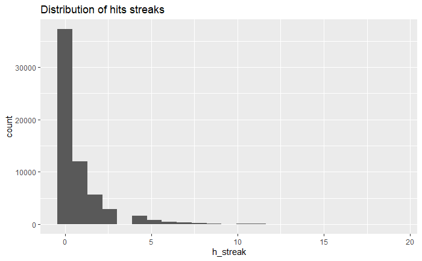
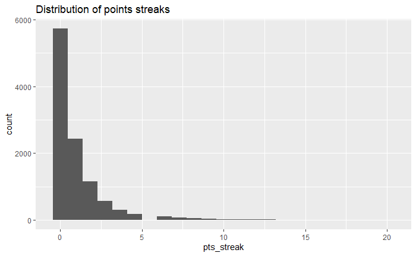
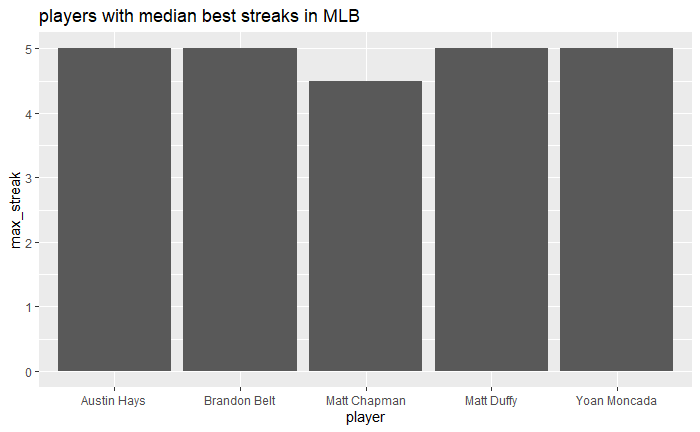
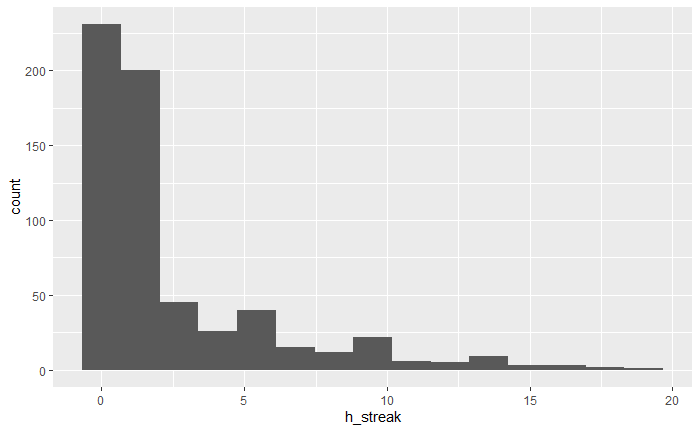
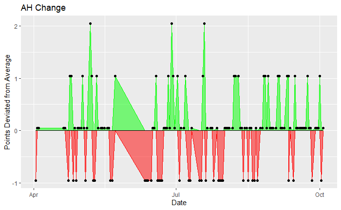
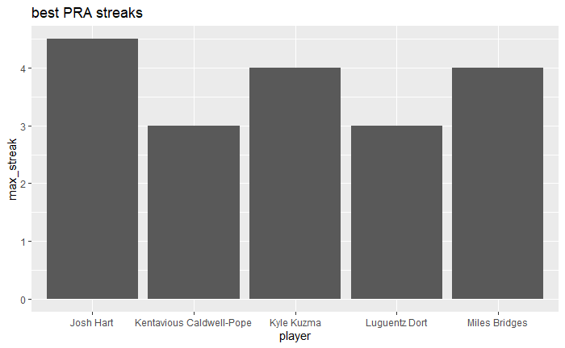
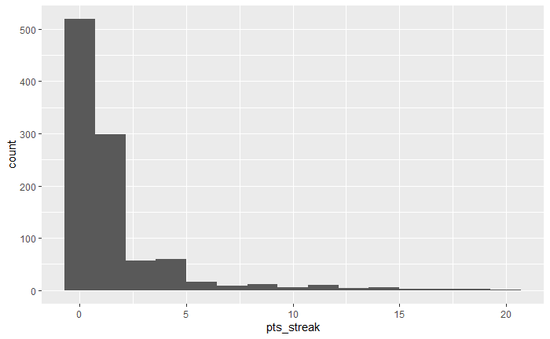
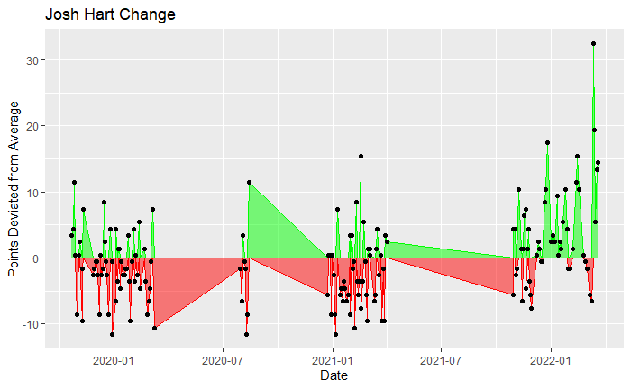

Oftentimes in sports, we say players are on “hot streaks” if they perform above a certain standard for multiple consecutive games. Some believe in the “hot hand”, where a player is more likely to make his next shot based on his previous performance. Similarly, “the zone” refers to a player who is seemingly in another place mentally, scoring at an unusually high clip. Some brush the “hot hand” off as sports pseudoscience, looking at each shot or opportunity to score as an isolated event. But what are streaks exactly? Can we quantify them? Is there any truth to these phenomena? We aim to define the standard against which a streak can be determined, identify streaks based on this standard, and draw comparisons between streaks in two sports leagues in particular: the NBA and the MLB.
One way we decided to assess the validity of streaks was by looking at two different sports. Basketball and baseball are extremely different sports in many aspect, such as playstyle, team size, season length, game structure, offense and defense schemes, and much much more. This difference however may aid in determining sports. If we were to look at only one sport, and found that players really did get the hot hand, it may return a false-positive. We aim to see if the streakiness of players and teams are localized to their respective sports, or certain transcendental properties emerge between the two sports. Due to the differences in the leagues’ formats and the natures of each sport, we will perform our analyses with respect to each league and then comparatively analyze the leagues to draw conclusions on the nature and impact of streaks on the league, respectively.
We have defined streaks as a player performing above their average in a specific stat, or a combination of stats in a number of successive games. We suggest that not only is there a method to predict when these players get on “hot streaks,” but we can perform similar analyses across different sports, and even identify whether certain players are “streaky” in general. If you participate in fantasy sports leagues, our findings may help you get a leg up in your workplace league, anticipating breakout players or finding players that may give you that extra boost you need to finally beat Martha in accounting. If you place bets on games, our findings may help you break out of your slump… and get back the money you lost from betting on the Sacramento Kings to win it all. If you are simply interested in sports and want to have a new way to assess player output and find trends within our data, then our findings are for you.
##What we have found, what is similar and what is different? Amazingly, we see very similar trends across the NBA and the MLB. Aggregated across the last 3 seasons, we can see below that the distribution of streaks between the MLB and NBA are almost identical. Keep in mind that we define a below average game as going on a “0” game positive points streak.
 
Next, lets look at the top players across the NBA and MLB and take a deep dive into the top performers in each league respectively. By top players, we are going to look at the players with the highest median streaks, a measure of how “consistently streaky” a player is. Below, we see the top 5 performers in each league, along with the distribution of streaks and the top players spike plot. As we can see, the top players in the MLB go on longer streaks more frequently than in the NBA. Further on in the analyis we will compare players with the highest maximum streaks and lead their leagues in a respective category.
  
  
In our interactive, we have a dashboard that shows the probability that a player will perform above their average based on some relevant metrics such as offensive rating and usage percentage in basketball, and home runs and plate appearances in baseball. We also have a summary of their streaks to see what the likelihood of them continuing the streak might be. To use it, select the sport’s league you would like to analyze and then select your player of interest. Start with your favorite player!
## Warning: package 'rsconnect' was built under R version 4.2.2